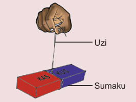

Jaribio namba 4: Kuchunguza namna ya kupata uelekeo kwa kutumia sumaku
Lengo:Kubaini upande wa kusini na wa kaskazini wa dunia
Mahitaji:sumaku mche mstatili na uzi
Hatua
1.
Funga uzi katika sumaku mche mstatili na ining’inize sumaku hiyo hewani. Chunguza Kielelezo namba 11.
2.
Subiri kidogo mpaka sumaku mche mstatili itulie. Je, ncha yenye neno KAS imeelekea upande gani wa dunia?Je, ncha yenye neno KUS imeelekea upande gani wa dunia?
3.
Sukuma ncha moja ya sumaku mche mstatili ili ianze kuzunguka, subiri mpaka itulie. Je, ncha ya KAS imeelekea upande gani?Na ile ya KUS imeelekea upande gani?
Kielelezo namba kumi na moja kinaonyesha mkono ukining’iniza sumaku mche mstatili kwa uzi, ikiwa na ncha za KAS na KUS ili kuonyesha mwelekeo wa kaskazini na kusini.

Kielelezo namba 11: Sumaku inayoning’inia hewani ikionesha uelekeo
Matokeo: Andika matokeo ya jaribio ulilolifanya.
Hitimisho: Andika hitimisho la jaribio ulilolifanya.